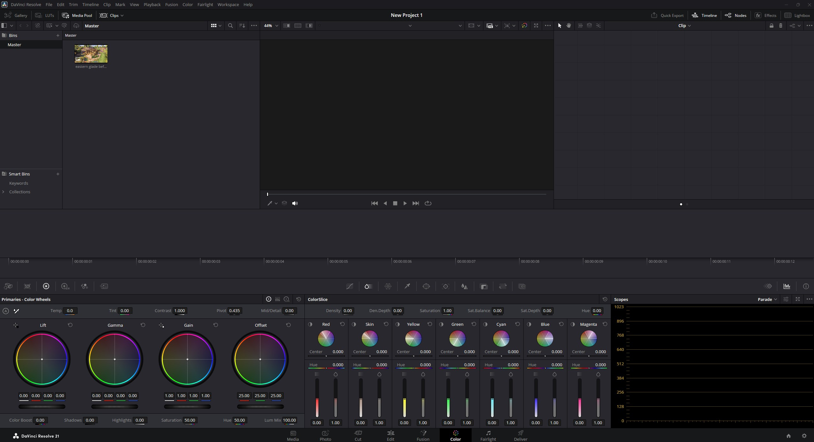
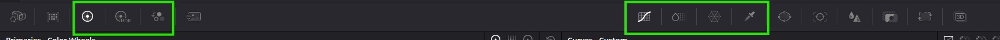
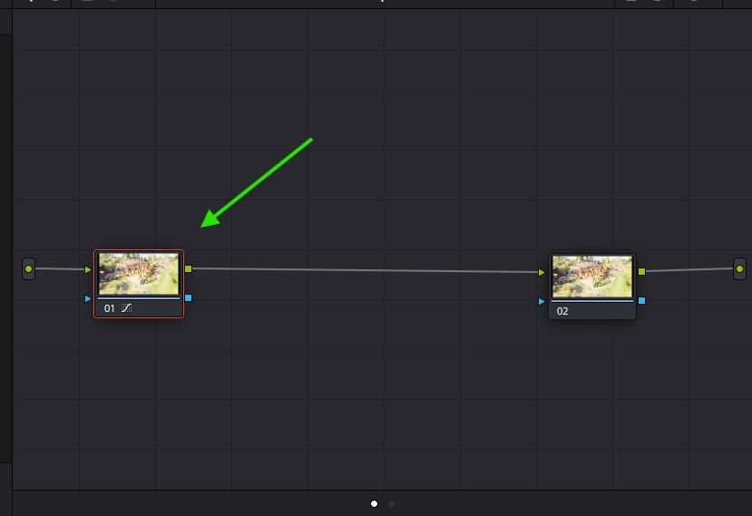
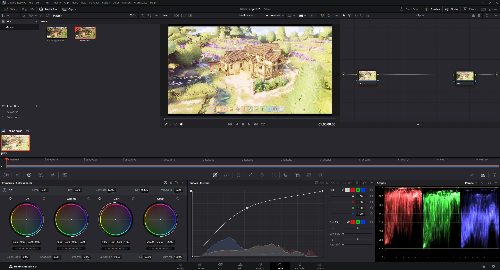
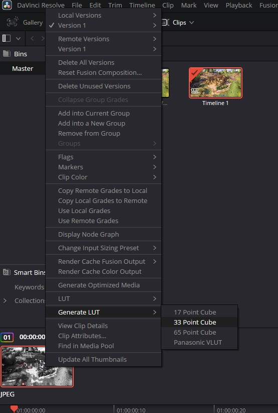

Editing LUTs
By Rapunzilla
What Are LUTs?

LUTs, or look-up tables, are used to remap colours. In Tiny Glade, they are specifically used as colour look-up tables to alter the final appearance of a scene.
Rather than changing the underlying textures, lighting, or renderer, a LUT transforms input colour values into different output colour values.
Tiny Glade uses 3D LUTs in .cube format. Although .cube files can contain several kinds of metadata and configuration information, Tiny Glade primarily uses the RGB colour transformation data.
Where Are LUTs Stored?
Tiny Glade's LUTs can be found in:
The exact location of your Steam library may vary.
Creating Your Own LUT
This guide uses DaVinci Resolve, which has a free version and provides powerful colour-grading tools.
Info
Other tools can also create .cube LUTs, including some online tools. This guide focuses on DaVinci Resolve because it provides reliable colour controls and an easy way to export LUTs.
1. Install DaVinci Resolve
Download and install the free version of DaVinci Resolve.
A Blackmagic Design account may be required during installation.
2. Capture a Tiny Glade Screenshot
Take a screenshot of the glade you want to use as a colour-grading reference.
For this example, the goal is to create a black-and-white, Japanese samurai-film-inspired look with only the red tones remaining visible.

3. Import the Screenshot into DaVinci Resolve
Open DaVinci Resolve and switch to the Color tab.
Drag your Tiny Glade screenshot into DaVinci Resolve.

Right-click the screenshot and select Create New Timeline Using Selected Clip.

4. Adjust the Colour Grade
The main colour-grading controls can be found in the Color workspace.

You can experiment with these controls until the image has the appearance you want.
For more control, colour corrections can be separated across multiple nodes.
To add a node:
- Right-click in the node editor.
- Select Add Node → Add Serial or the appropriate corrector option.
- Connect the node into the existing node chain.

Info
You can use multiple nodes, with each node handling a different part of the colour grade. This makes more complex adjustments easier to manage.
For more advanced techniques, look for colour-grading or LUT-creation tutorials for DaVinci Resolve.
Edit the node or nodes until the image looks the way you want.

For this example, the final grade was created using a single node.

5. Export the LUT
When you are happy with the result, right-click the image and select Generate LUT.
Export the LUT as a 33-point .cube file into Tiny Glade's luts folder.
A 33-point LUT provides sufficient resolution for this type of in-game colour transformation.

6. Test the LUT in Tiny Glade
Start Tiny Glade and open Photo Mode.
Your new LUT should appear in the LUT or filter selector.

The LUT can then be applied to the current scene.

That is all that is required to create a custom colour LUT for Tiny Glade.
Warning
Tiny Glade only uses the RGB colour transformation contained in the LUT.
Effects that depend on DaVinci Resolve itself, external VFX plugins, masks, tracking, compositing, or other processing that cannot be represented as a simple colour transformation will not be reproduced in-game.
Resources Used in This Example
- Mod: "Eastern Glade" by Rapunzilla
- Example LUT: Akira / Sin City LUT